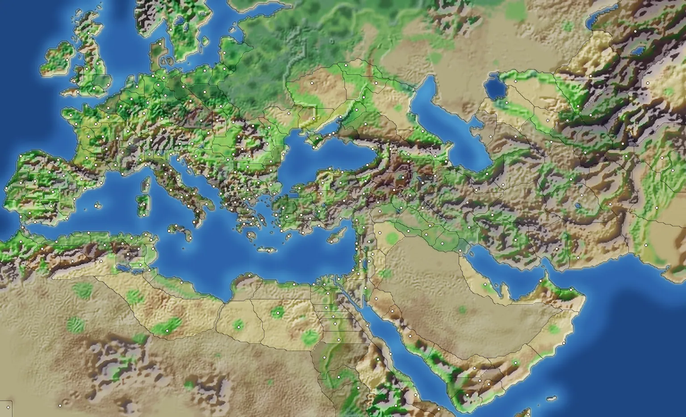
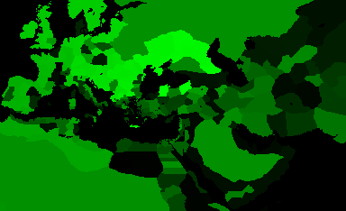

RTR: Imperium Surrectum
RTR: Imperium SurrectumThe world map
← wiki index · all regions and settlements
The campaign map at the start of the RIS Classic campaign.


← wiki index · all regions and settlements
The campaign map at the start of the RIS Classic campaign.

